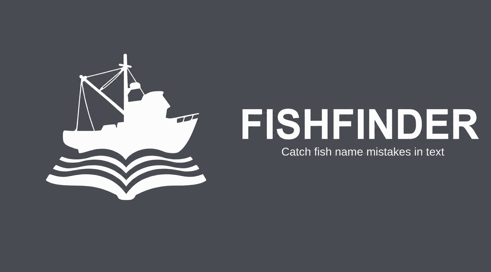

FISHFINDER
FISHFINDER — HOW TO USE
Quick start
- Paste manuscript text into the input area, or press LOAD (or drop a file onto the screen) to upload a .txt, .csv, .docx, .xlsx, .xls, or .pdf file.
- Press SCAN (or Ctrl+Enter) to analyze the text.
- Review color-coded results in the SPECIES DETECTED and ISSUES DETECTED panels.
- Press COPY to copy auto-corrected text to your clipboard — outdated synonyms and misspellings are replaced automatically.
Tip: press HI-CON to switch between the default retro LCD palette and a high-contrast display mode (white background, dark text).
FISHFINDER validates scientific fish names in manuscript text against the Common and Scientific Names of Fishes from the United States, Canada, and Mexico, 8th edition (Page et al., 2023) together with the Committee's published addenda, supplemented by synonym data from Eschmeyer's Catalog of Fishes. The underlying species list covers freshwater, brackish, and marine fishes of the United States, Canada, and Mexico — no separate mode is needed for any habitat category.
Classification codes
- VALID — recognized in Names of Fishes, 8th edition or its published addenda
- CHANGED — valid but revised from the 7th edition; confirm species identity
- OUTDATED — known synonym; current valid name shown
- MISSPELLED — close match found; suggestion shown
- UNKNOWN — genus recognized but species not in database
- REMOVED FROM THE LIST — the name was in the 8th edition but has since been withdrawn by a published addendum; no replacement name is offered because none was published
- COMMON NAME — English common name detected; scientific equivalent shown
Abbreviated genus names
Names abbreviated after first mention — P. olivaris for Pylodictis olivaris — are checked too, so a manuscript is not only proofread at its first mention. The genus is resolved from a spelled-out mention elsewhere in your text, so it is always a genus you wrote; abbreviations whose genus never appears in full, and ones where two spelled-out genera share the initial and nothing distinguishes them, are left alone rather than guessed. A row marked P. olivaris shows the form as written beside the full name. Corrections keep your abbreviation, except where the genus itself changes, which is spelled out so the change is not hidden behind an initial.
Low-confidence matches
A genus followed by an ordinary word looks like a species name to any text scanner — “Ranzania includes…”, “Bagre mainly…”. These are collected into a collapsed group below the issues table instead of being reported as errors, and are never rewritten by COPY. They are set aside rather than hidden, because roughly 200 real epithets are also ordinary English words (Hypanus say, Haemulon album, Etheostoma obama) and discarding them outright would miss real names.
Coverage
Covers ~5,200 species from U.S., Canadian, and Mexican waters (Names of Fishes, 8th edition plus the Committee's published addenda) with synonyms from Eschmeyer's Catalog of Fishes. Freshwater, brackish, and marine species are all included. Current data version: —.
What’s new in FF-8.1
FISHFINDER now incorporates Addenda, corrigenda, et explanenda to Common and Scientific Names of Fishes, Eighth Edition (Schmitter-Soto et al., Fisheries 51(5):225–227), the Committee on Names of Fishes' first published update to the 8th edition.
- 115 species added that were not in the printed book — including whole genera the tool previously could not see at all, such as Caliraja, Rubricatochromis, and Vexillichthys.
- 22 names re-targeted by genus transfers, replacements, and gender or spelling corrections. The superseded spelling is now flagged OUTDATED with the current name shown — for example Beringraja rhina → Caliraja rhina, and Sparus auratus → Sparus aurata.
- 1 species withdrawn from the List (Gambusia clarkhubbsi), now reported with an explanation rather than silently accepted.
- 103 entries corrected in place — occurrence codes, Spanish and French common names, and family placements.
Names whose authority is the addenda rather than the printed book carry an addenda marker, so you can always tell the two apart. The data version shown in the footer identifies exactly which snapshot you are checking against: FF-8 is the printed 8th edition, and each later .n adds a published addendum.
Where FISHFINDER differs from the printed addenda
Five names in the addenda’s supplementary table disagree with the original published spellings recorded in Eschmeyer’s Catalog. FISHFINDER follows the original spelling, since orthography is governed by the International Code of Zoological Nomenclature rather than by any checklist. The table’s spelling still resolves to the right species, so a name copied straight from the addenda will always find its target.
- Ipnops agassizi → Ipnops agassizii (Garman, 1899)
- Symphurus ocullelus → Symphurus oculellus (Munroe, 1991)
- Apterichtus aequatorialis → Apterichtus equatorialis (Myers & Wade, 1941)
- Bollmania gomezi → Bollmannia gomezi — the genus is Bollmannia Jordan, 1890
- Plectrobranchus evides → Plectobranchus evides (Gilbert, 1890) — this species was already in the 8th edition, so the entry is a new Mexican occurrence record rather than an addition
All five appear on rows the table labels “New to the List” or “New for Mexico” rather than “Spelling correction,” a category the addenda uses elsewhere, so these read as transcription slips rather than deliberate emendations. Every other new name in the table matches Eschmeyer exactly.
Key changes in the 8th edition
Several well-known names were revised. Notably, Largemouth Bass changed from Micropterus salmoides to Micropterus nigricans; Micropterus salmoides now refers exclusively to Florida Bass. Names flagged CHANGED warrant careful review.
Privacy
No manuscript text you enter is transmitted off your device — all processing happens locally in your browser.
What is collected (with your consent): approximate location (city and country derived from your IP address via ipapi.co), timestamp of your first scan in a session, and aggregate scan counts. This data documents tool reach and impact for academic reporting.
What is NOT collected: no manuscript text, no personal information, no login credentials, no cookies for tracking, and no user accounts.
Where data is stored: Firebase Realtime Database (Google infrastructure). Third-party services: ipapi.co (IP geolocation) and Firebase (storage).
Your control: You can change your analytics preference at any time using the Privacy Settings link at the bottom of the tool.
Report an issue
Found a bug or have a suggestion? Press the REPORT button below the device to submit a report directly, or open an issue on GitHub.
License
FISHFINDER source code is licensed under the PolyForm Noncommercial License 1.0.0. Free for academic, government, nonprofit, and personal use; commercial use requires a separate license. The fish name database is derived from Page et al. 2023 and remains the property of the American Fisheries Society — see NOTICE for details.
REPORT AN ISSUE
parse_pdf.py to generate
data/fish_names.json, then serve via HTTP
(python -m http.server 8080).
ALL CLEAR — no issues detected
| Name | Status | Suggestion |
|---|
0 low-confidence matches — likely ordinary prose, not species names
| Name | Status | Suggestion |
|---|
DATABASE COVERAGE
- Geographic coverage
- United States · Canada · Mexico freshwater, brackish and marine, including EEZ waters
- Common names
- — English · — Spanish · — French
- Sources
- Names of Fishes, 8th edition + published addenda synonyms from Eschmeyer's Catalog of Fishes, accessed 22 September 2026
- Data version
- —
REFERENCES & CITATIONS
Page, L.M., Bemis, K.E., Dowling, T.E., Espinosa-Pérez, H., Findley, L.T., Gilbert, C.R., Hartel, K.E., Lea, R.N., Mandrak, N.E., Neighbors, M.A., Schmitter-Soto, J.J., and Walker, H.J., Jr. (2023). Common and Scientific Names of Fishes from the United States, Canada, and Mexico, 8th edition. American Fisheries Society Special Publication 37. American Fisheries Society, Bethesda, Maryland.
Fricke, R., Eschmeyer, W.N., and Van der Laan, R. (eds.) (2026). Eschmeyer's Catalog of Fishes: Genera, Species, References. California Academy of Sciences. Electronic version accessed 22 September 2026.
Schmitter-Soto, J.J., Bemis, K.E., Dowling, T.E., Findley, L.T., Girard, M.G., Hendrickson, D.A., Ilves, K.L., Maslenikov, K.P., Ruiz-Campos, G., Scharpf, C., and Walker, H.J., Jr. (2026). Addenda, corrigenda, et explanenda to Common and Scientific Names of Fishes, Eighth Edition. Fisheries 51(5):225–227.
Zbinden, Z.D. (2026). FISHFINDER: Catching Fish Name Mistakes in Text. Fisheries. Advance online publication.
AFFILIATION LINKS
SUPPORT THIS PROJECT
Found an error you'd have missed? We figure that's worth about a buck. No pressure — FISHFINDER stays free either way.
CHIP IN A BUCKGifts are handled by UMCES and designated to FISHFINDER.

USAGE STATISTICS
Anonymous usage data collected with your consent. See Privacy in INFO for details.